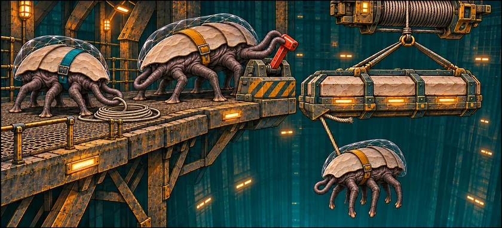
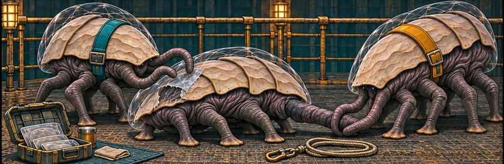
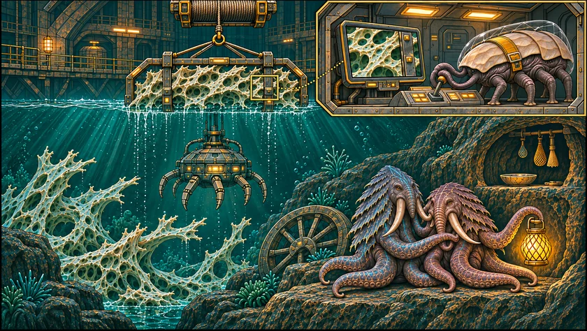

THE ORUUN · FROM ABOVE
The Weight on the Line
Marr runs the winch on a reef harvester. Today the load is heavy.
For two hundred years, the Dryborn have taken from the first alien people humanity will meet. They could have known.
The Dryborn cut the reefs to power the Reach’s gates. They build the network; they own none of it. Their crews mistake Oruun homes and lamps for wild reef life. An early warning was filed away.



Read the words
Marr stops the winch. “Bring her in; the cargo can wait.”
They lift her onto the platform. Marr holds her leg while Siv seals the torn cold-suit.
“All our people are safe.” Marr lifts the reef past a light his camera does not show.